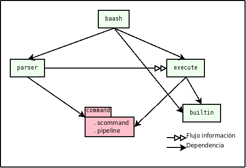
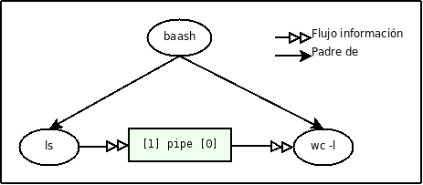

Codificar un Bourne Again Again SHell (baash) que tenga las siguientes funcionalidades generales:
Debería poder ejecutar correctamente los siguientes ejemplos:
ls -l baash.c ls 1 2 3 4 5 6 7 8 9 10 11 12 ... 194 wc -l > out < in /usr/bin/xeyes & ls | wc -l
En particular deberán:
Para la implementación se pide en general:
Se propone una división en 3 módulos. Uno estructural, y dos funcionales:
El primero define un TAD pipeline a través del cual se pasan datos a los otros módulos. El módulo principal baash utiliza estos tres módulos. Además un modulo auxiliar builtins auxilia en la ejecución de comandos internos.

Notar que esta modularización funcional depende fuertemente del TAD pipeline, por lo tanto este módulo debe ser implementado rápida y correctamente.
A partir de la lectura de man bash en su sección SHELL GRAMMAR, se extrae la gramática que maneja el shell. Esta se divide en 3 capas: comando simple, tubería y lista, en orden creciente de complejidad. Limitaremos la implementación a los 2 primeros niveles.
| TAD | Ejemplo de comando | Tipo (estilo Haskell) |
| scommand | ls -l ej1.c > out < in | ([bstring],bstring,bstring) |
| pipeline | ls -l *.c > out < in | wc | grep -i glibc & | ([scommand],bool) |
| Entrada | Estructura | Comentario |
| cd ../.. | ( [(["cd", "../.."], "", "")], true ) | El shell padre espera la terminación del hijo. Un elemento de pipeline. Este único elemento tiene 2 cadenas y sin redirectores de entrada y salida. |
| xeyes & | ( [(["xeyes"],"","")], false ) | Un elemento en el pipeline con ejecución en 2do plano. Ese elemento no tiene redirectores ni argumentos. |
| ls | wc -l | ( [(["ls"],"",""),(["wc", "-l"],"","")], true ) | Sin ejecución en 2do plano, dos comandos simples conectados por un pipeline. |
| ls -l ej1.c > out < in | ( [(["ls","-l","ej1.c"],"out","in")], true ) | Vemos como el único comando simple del pipeline tiene redirectores. |
| ls -l *.c > out < in | wc | grep -i glibc & | ( [scomm0,scomm1,scomm2], false ) where scomm0=(["ls", "-l", "ej1.c"],"out","in") scomm1=(["wc"],"","") scomm2=(["grep","-i","glibc"],"","") | La estructura usada al máximo. |
Ambas estructuras de datos contienen dentro una lista o secuencia de objetos. En el primero es una secuencia de bstring y en el segundo de scommand. Cualquier TAD que permita realizar estas operaciones alcanzaría para nuestros propósitos:
Utilizando alguna implementación probada de secuencia, el resto es más o menos directo ya que el comando simple y el pipeline son tuplas que además de las listas contienen booleanos y cadenas de caracteres.
Resultan importantes las dos funciones *_to_string porque nos permitirán debuggear el resto de la implementación. Cuando tengamos dudas de lo que recibe o devuelve un módulo funcional, recurrimos a estas funciones para imprimir a la manera del shell los TAD.
Se da una test-suite implementada con check a fin de comprobar que la implementación dada tiene alguna parte de la funcionalidad esperada. Basta con hacer make test-command para compilar e invocar el unit testing de scommand y pipeline.
El parser a utilizar, cuya interfaz está dada en el encabezado parser.h, será entregado por la cátedra y consiste de los módulos parser.o y lexer.o y ha sido construído sobre el lexer utilizado en el laboratorio anterior.
Notar que el TAD Parser toma un FILE * como entrada y como en *NIX, todo es un archivo, la entrada estándar también tiene un FILE * asociado.
La primera tarea del módulo de ejecución es reconocer entre comandos internos y externos, y decidir si invocar a una función interna o a la ejecución de procesos externa.
Podemos dar ejemplos de la relación entre las entradas del baash y los syscalls:
| Entrada | SysCalls relacionadas | Comentario |
| cd ../.. | void | El comando es interno, solo hay que llamar a la syscall de cambio de directorio. |
| gzip Lab1G04.tar | fork(); execvp(); wait() | Ejecutar el comando y el padre espera. |
| xeyes & | fork(); execvp() | Un comando simple sin redirectores y sin espera. |
| ls -l ej1.c > out < in | fork(); open(); close(); dup(); execvp(); wait() | Redirige tanto la entrada como la salida y el shell padre espera. |
| ls | wc -l | pipe(); fork(); open(); close(); dup(); execvp(); wait() | Sin ejecución en 2do plano, dos comandos simples conectados por un pipeline. |
En el caso de los pipes pedimos respetar la siguiente estructura filiatoria:

Como aquí se concentran la mayoría de las llamadas a sistema (syscalls), se deberá tener especial cuidado en los códigos de error que ellas devuelven e intentar manejar esta información de la mejor manera posible. Todas las syscalls (y también llamados a bibliotecas) pueden fallar, algunos con mayor probabilidad que otros (es de esperar que un fork() sea exitoso, pero no hay tanta seguridad para un open()).
Otros detalles a tener en cuenta:
Finalmente en este módulo hay muchos detalles no especificados que deberán ser resueltos en la medida de lo posible, recurriendo a la experimentación.
Hasta ahora no hablamos de los comandos internos en todo esta propuesta de modularización.
El módulo builtin debería tener un par de funcionalidades básicas sobre un scommand. La primera sería detectar si es un comando interno, mientras que la segunda es efectuar dicho comando.
Se piden solo dos comandos internos: cd y exit. El primero se implementa de manera directa con la syscall chdir(), mientras que el segundo es conceptualmente más sencillo pero requiere un poco de planificación para que el shell termine de manera limpia.
Aunque se piden pocos comandos, una buena implementación del módulo builtin debería poder soportar una cantidad arbitraria de comandos internos sin modificaciones mayores.
Para implementar todo lo de arriba les entregamos:
El código se puede bajar del sitio de la materia.
El proyecto se entrega antes del Martes 03/09/2019 a las 18:00h y deberá:
La entrega se hara directamente ingresando una revisión en el sistema de control de revisiones (bitbucket) que les asigna la cátedra.
Se pueden hacer las siguientes mejoras: